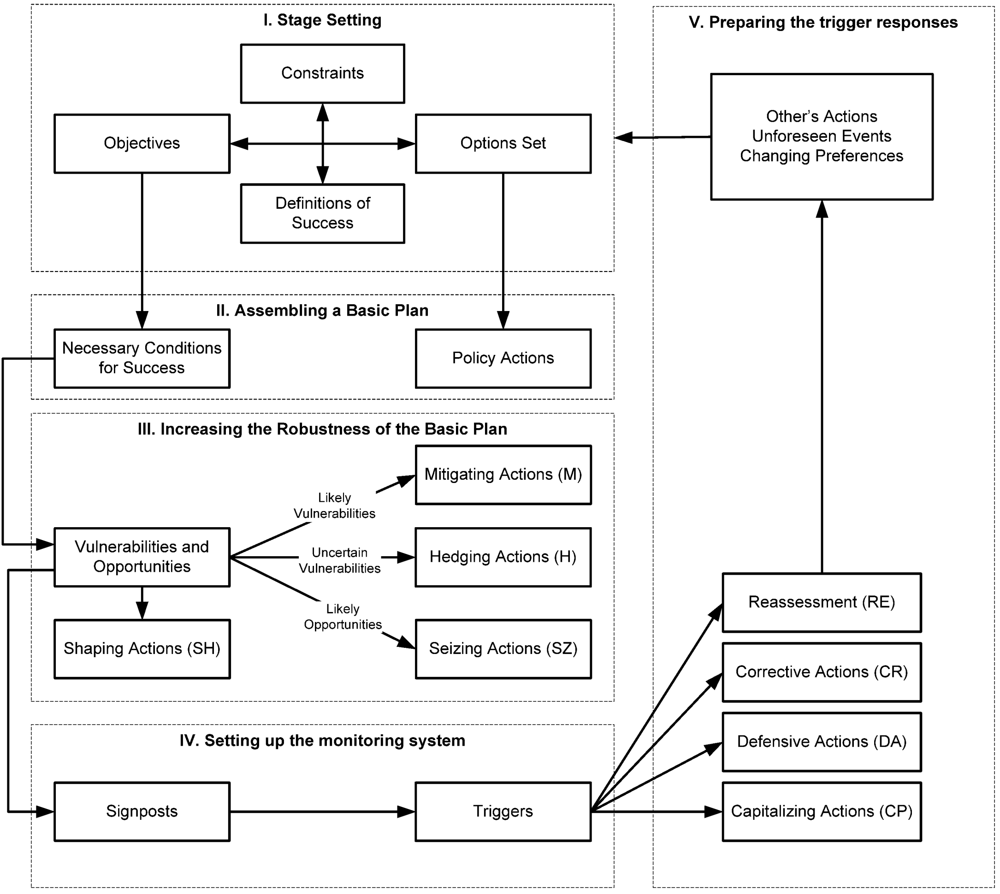

Industry Roadmapping and Participatory Model Building
Polytely Analytics organises and implements workshops, during which the participants engage in a participatory roadmapping process that aims to identify strategic pathways and opportunities for collaboration and innovation. The roadmapping process facilitates the exchange of local or sectoral knowledge and experience, and highlights opportunities for and challenges of collaboration between the involved stakeholders. It is also expected that opportunities for collaboration will emerge through the identification of the conditions under which stakeholders' collaboration could increase their capability to affect the future rather than submit to it.
The main purpose of this process is not to come up with scenarios; the process's goal is to identify patterns of potential collaboration or conflict between the stakeholders. The main question for the participants under a given scenario is:
Given your expectations of your (i.e. the stakeholders you represent) and the other stakeholders' actions under this scenario, what would be the benefit of collaboration, around which technology and/or service could this collaboration materialise, and what measures should be implemented - in terms of learning, experimenting or risk sharing - so that collaboration to be viable?
The participatory roadmapping process:
- Brings forth the knowledge and concerns of the stakeholders.
- Adopts a stakeholder based approach that views the future system under study as the outcome of the interactions of the stakeholders who operate within it.
- Facilitate the exchange of local knowledge and experience, and highlight opportunities for and challenges of collaboration between the involved stakeholders.
The outcome of this process is a shared - among the participating stakeholders - map of interrelations and links that connect stakeholders around services or technologies. Depending of the details of the methodology and its adaptation each time, these maps can exist in software, in printed handouts filled in by the participants or even photos of graphs and diagrams in a room with full-wall whiteboards.
Some tools we use:
- Fuzzy Cognitive Maps (FCM): A cognitive map can be described as a qualitative model of how a given system operates. The map is based on defined variables and the causal relationships between these variables. The variables can be physical quantities that can be measured or complex aggregate and abstract ideas, such as political forces or goals. An FCM is essentially an extension of a cognitive map. It is a weighted, directed graph representing the perceived causal structure of a system. One can include actors, objectives or matters of concern, technologies or infrastructure and driving forces in these diagrams, which can be directly transformed into simple mathematical models to be interrogated by the participants.
- Cross-impact balance analysis (CIB) is a consistent scenario development method that promotes understanding of the system through an accompanying reflective process. Due to the fact that the method can be substantiated using a system-theoretical background, it can be utilized in combination with FCM.
- Adaptation Pathways provide insight into the sequencing of actions over time, potential lock-ins, and path dependencies. A notion central to the Adaptation Pathways is the one of adaption tipping points that corresponds to the conditions under which an action no longer meets the specified objectives. After reaching a tipping point, additional actions are needed. As a result, a pathway emerges. The Adaptation Pathways approach presents a sequence of possible actions after a tipping point in the form of adaptation trees that represent alternative routes to get to the same desired point in the future. We visualize these pathways using the Subway Map Metaphor.
The framework shaping our roadmapping exercises is derived from our conscious avoidance of the following misconceptions:
- Complex systems can be fully understood and described
- Uncertainty is always reducible or quantifiable
- Simple cause-effect relationships can always be established
- A complex system must be fully understood before making decisions that affect it (positively or negatively)
- With enough effort and knowledge, complex systems are fully controllable
- A decision is the end-point of a linear process of reasoning which includes neutral weighting of pros and cons, and optimization.